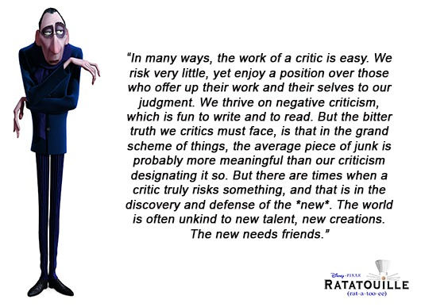
A few weeks ago I was on a flight and was looking through the movies they offered. Two movies caught my eyes:
 Should I watch the 'regular' version of Lincoln or the 'vampire hunter' version... Looking up the Metacritic review of Lincoln Vampire Hunter I found this:
Should I watch the 'regular' version of Lincoln or the 'vampire hunter' version... Looking up the Metacritic review of Lincoln Vampire Hunter I found this:
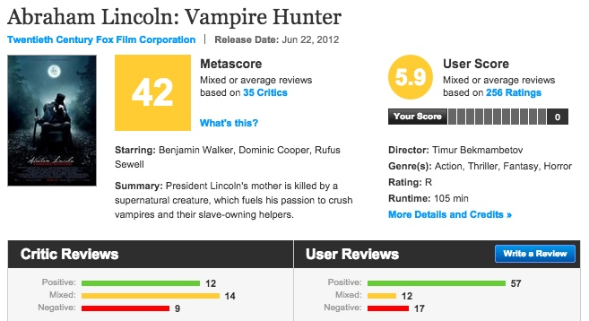
While critics for the most part really didn't like it, it had 'decent' support from audiences with the majority of audiences giving it a positive review. So I was left with a choice: to go with the critically acclaimed Lincoln movie or to go with my gut instinct...
This may be a dilemma you have faced and weren't sure if you could trust the film critics. There is no shortage of articles and trolls on the internet that call out film critics for being a bit "snobby", over-the-top, or out of touch. Just look here or here or here or.. okay you get the idea! A simple google search will reveal quite a lot of discontent with today's film critics. Are all these people just upset because their favorite movies got bad reviews? We definitely do have a lot of cry babies and internet trolls in society today...
One guy on cracked.com went as far as to describe a film critic like so:
Movie Critics are people who cannot create anything themselves, but still feel the need to be recognized by the creative community.
And he goes on:
Movie critics are the not-so-distant real-world cousins of Internet trolls.
Ouch. That was harsh.
The Problem: Where's the Math?
So it's great to make wild outlandish claims with anecdotal evidence like this:
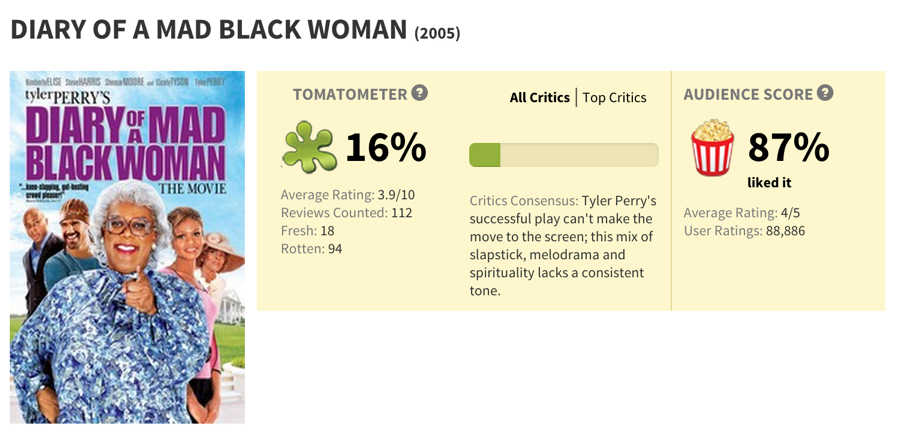
That is a 71% difference! Critics on average absolutely hated this movies while nearly 100,000 audience members liked it! How can the critics be so wrong? How can they be so out of touch? This is ridiculous! Or is this example just an outlier?
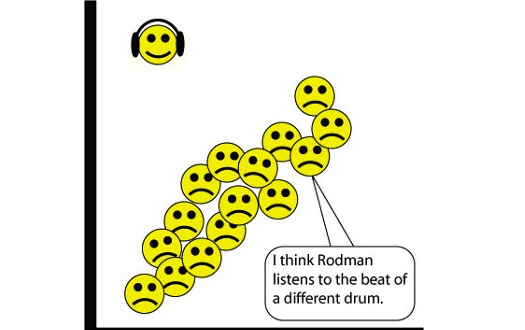
The Question: Are film critics really that out of touch?
Are film critics as bad as people say? Is there actual data that backs up this assertion? Well, I thought I would find out...
The Method: How should we do this?
In general what people have done to measure this in the past is simply looking at the averages and seeing how far apart they are. Like this:
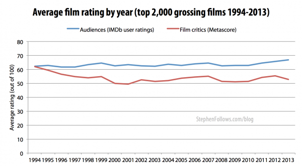
This seems to be a very common way, but it definitely has its issues. Film critics and regular audience members could simply just have very different internal scales in how they grade movies. But maybe film critics and audience members generally believe good movies are good and bad movies are bad and actually agree for the most part. Here is an example:
One critic rates movies he hates at around 10% and movies he like at around 70% while movies he absolutely loves are 90%+. One audience member who frequents Metacritic or Rotten Tomatoes rates movies he hates at around 50%, movies he likes at around 90% and movies he loves at 100%. And let's say that they have the exact same taste in movies.
If we just measured averages, we would say that the critic is much harsher than the audience member. BUT that would be very far from the truth because they actually have similar tastes. If only there was a statistical method to measure correlation....
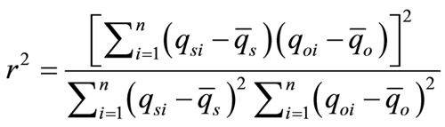
Gotta love statistics! We will be using the R squared or "The Coefficient of Determination" to figure out if they are in fact "correlated" (I'm actually using R^2 Adjusted to account for different numbers of reviews). So measuring this is very different than just comparing averages.
In other words, we will be measuring how critics and audience members change together. I know this is technically not what our formula is calculating, but close enough.
Stealing Collecting the Data
So for this project, I scraped (using beautiful soup) Metacritic to get information about each film critic. Basically I stole all the critic information off of the Metacritic website (slowly enough so that they wouldn't blacklist me) and put it into a giant database so I could analyze it. I collected all critics' reviews, scores for the movie and the corresponding metascores and user review averages for each movie (If you're interested in the actual math/coding that I did, you can see it here).
Analyzing the Data
Like any major dataset, there was a lot of "cleaning" that I had to do because much of it was incomplete. But when all was said and done, about 300 critics (out of 600) qualified to be used in this analysis (critics with at least 50 eligible reviews with corresponding audience member reviews and metascores). Now all that's left to do is to calculate how correlated each critic is with the average audience member.
Overall Picture
So to give an overall picture first:
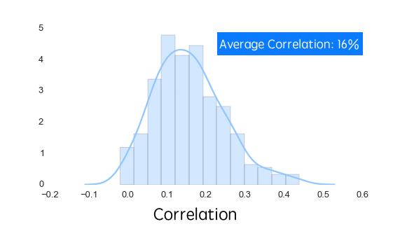
From this we see that there's a pretty wide distribution of correlations amongst the 300+ critics with most in the 10% - 20% range. Now what do these percentages mean? Well if the correlation was 0% it would mean that there absolutely no mutual pattern between the critic and the average audience member. Whereas if it was 100% it would mean that they were perfectly aligned in their views across all movies, not that they had the same average score. Now what does it mean that the average correlation is 16%?
It means that the internet troll are onto something! That's right! Sorry for feeding the trolls...
But we can conclusively conclude (and redundantly) that film critics generally and consistently do not have the same views on movies as an audience member! So let me give you an example of what a graph might look like for an out of tune film critic.
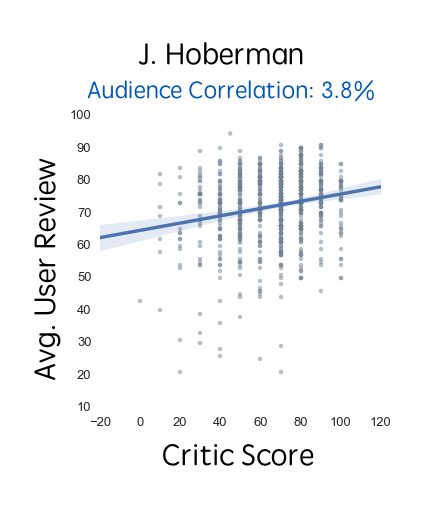
So this is a scatter plot of film critic J. Hoberman's movie review scores against the average audience member review for that same movie. You can see here that there is no clear pattern, hence the measly 3.8% correlation. Ironically enough, J. Hoberman was actually let go a couple years ago by the Village Voice after 40 years of working there.
Do Genres or MPAA Ratings Matter?
Well maybe this is only the case because there are so many different genres and you can't just generalize everything. People are allowed to have different opinions okay!? It also might be different for different MPAA ratings you say? So I ran the calculations, dividing by major genres and ratings, and got a few interesting results.
For ratings, I found that overall, the correlations still remained low very.
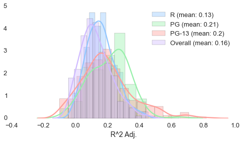
Overall, R-rated movies had the lowest correlation at 13% and PG movies had the highest correlation at about 21%. That means there's far greater disagreement as the ratings get more adult.
For genres, I got a somewhat similar distribution:
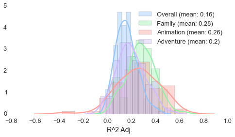
Family and Animation were the highest by far with 28% and 26% correlations. Drama, surprisingly, was the lowest with a 11% correlation.
I think from these we can say that family-oriented movies, usually rated G or PG, have the highest correlations between critics and audiences. They are generally reviewed similarly!
The Dundies Critic Awards
So using this data, I came up with a bunch of different measurements that seemed cool at the time... So I really dug deep into my creativity reservoirs and decided to present them as "The Critic Awards". Here are the different categories along with the winners!
The People's Critic - Alonso Duralde
This award goes to the critic with the highest correlation with the average audience member. So with a correlation of 44%, the winner is Alonso Duralde of The Wrap. Congratulations Alonso, you deserved it! And hopefully you will read this and retweet it to your well-earned 9,000 followers!
If you're wondering what a more highly correlated scatter plot looks like, here you go!
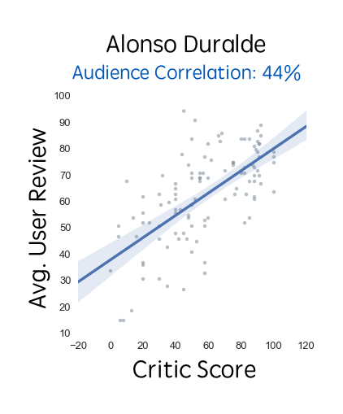
The Anti-People's Critic - Melissa Levine
This award goes to the critic who is the LEAST aligned with the average audience member! Congratulations Melissa Levine, formerly of the Dallas Observer! You somehow managed to have a 0.05% correlation!
The People's Publication - Total Film
This award goes to the publication that is most aligned with everyday folks like you and me. Congrats Total Film with an average 42.4% correlation across 13 different critics!
If you're wondering why this is so high given that the highest critic value is only a percent higher, it's because many of the critics from Total Film didn't qualify for the individual rankings as they didn't have enough reviews.
The Anti-People's Publication - The Dallas Observer
Congratulations to The Dallas Observer, you are officially out of touch with the average audience member with only an 8% average correlation across your 7 represented critics!
The Optimistic Critic - Calvin Wilson
This award goes to the critic who, on average, rated movies much more highly than the average audience member. Congratulations Calvin Wilson of the St. Louis Post-Dispatch, you gave an average review that was 9.9% higher than audience members!
The Snobbiest Critic - Steve Simels
Congratulations Steve Simels of TV Guide, you gave ratings that were, on average, 24.3% lower than the average audience member! 24.3%!
The Critic's Critic - John Hartl
This award goes to the critic that is most closely aligned with other critics! How well do a critic's reviews align with the metascore(weighted critics' average) for each movie. Congratulations Jon Hartl of the Seattle Times, you were on average 78% aligned with the average critic!
The Renegade Critic - Phil Hall
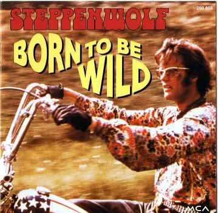 This goes to the critic who goes against the grain of his fellow ilk! Congratulations Phil Hall of Film Threat! While you may have been misaligned with the average audience member, you were also completely misaligned with other critics! You definitely march to the beat of another drum... you only had a 0.86% correlation with your fellow average critic!
Conclusions
And so this concludes the first round of The Critic Awards! I hope you enjoyed this article and realize that most film critics aren't necessarily aligned with your exact movie taste. Though maybe reviews are more trustworthy for the obvious movies (ie. Shawshank Redemption, The Godfather, etc.), there is still a lot of variability! So take a chance when you can and give a movie a try even if it has a low score on Rotten Tomatoes or Metacritic!
I know that I didn't regret watching Abraham Lincoln Vampire Hunter insead of Lincoln.
Future Thoughts
While I only had a little more than a week to do this project, I hope to be able to add more features in the future. I would love to create a system where a user rates 10 stock movies and then from that create a recommendation of film critics that they are most aligned with. And after that, creating a new film review system would be great, one that weighs average audience member reviews, film reviews, and a few other metrics (gross, budget, etc.) and is personalized based on your stock movie reviews.
What I Learned Today:
Project write-ups take about as long as the projects themselves...